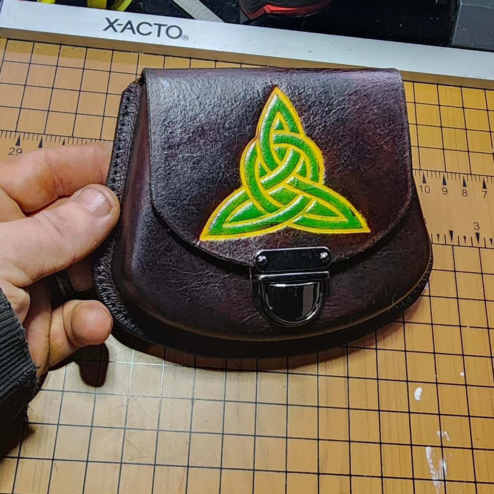
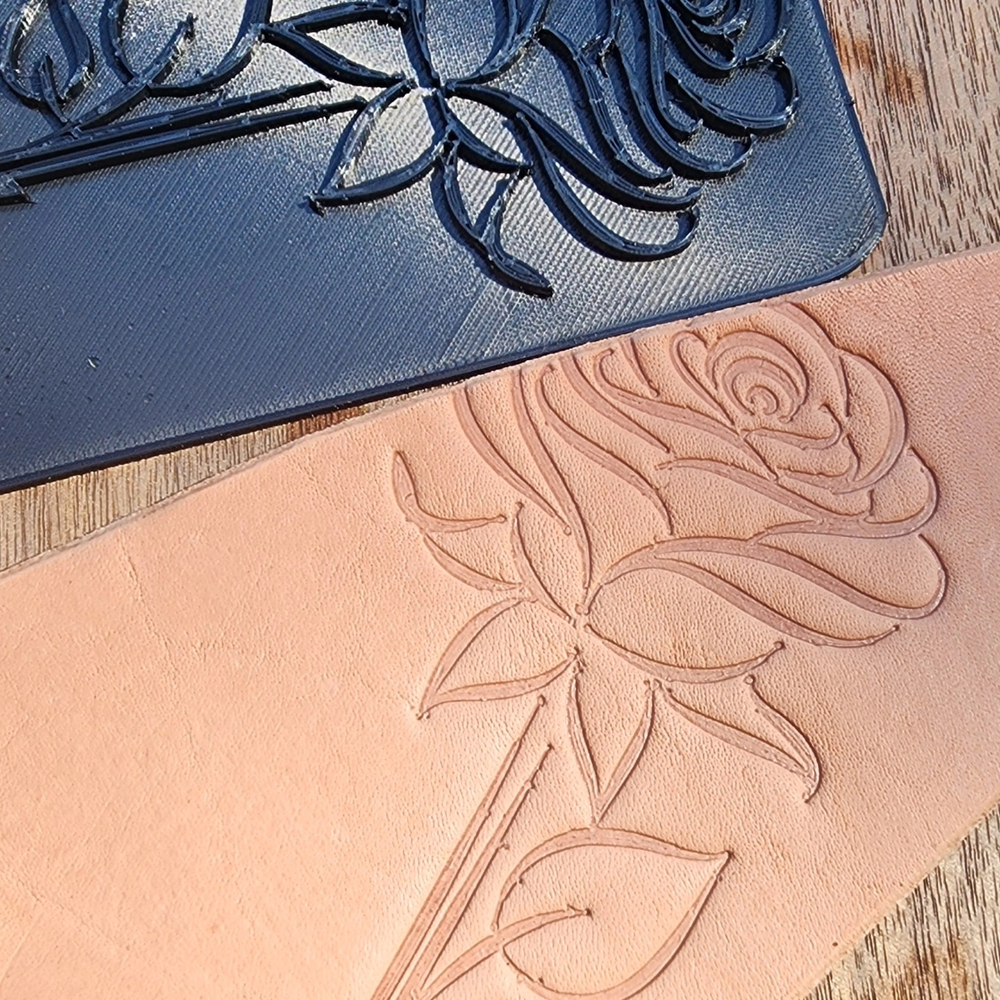
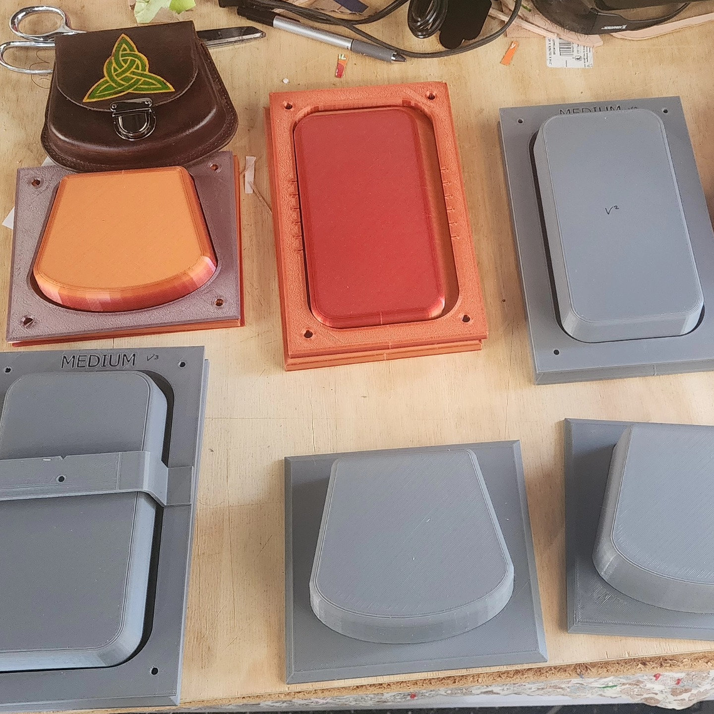
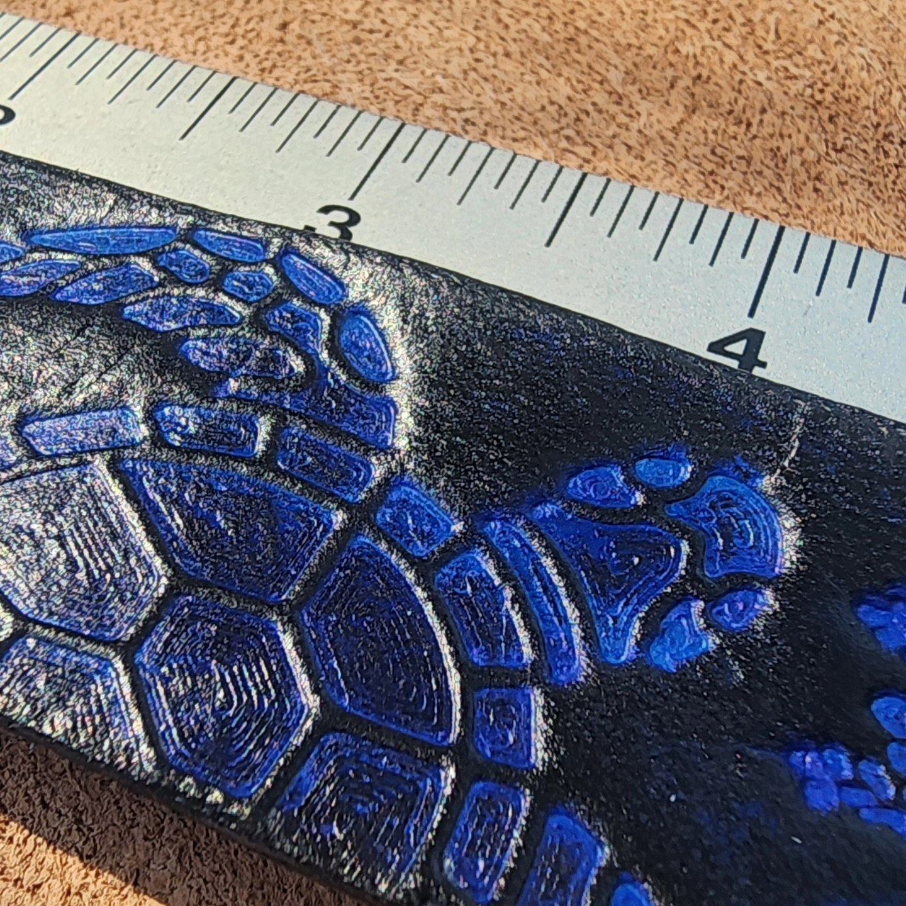
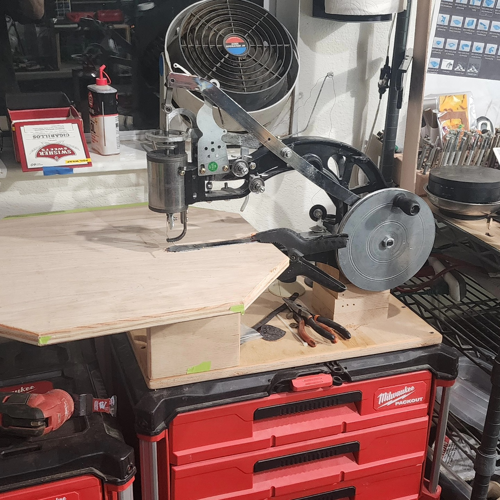
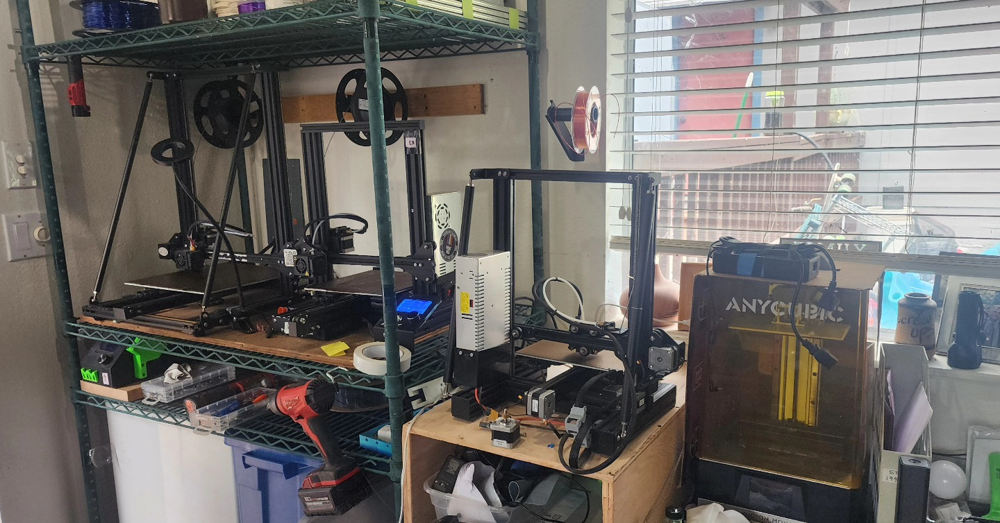

Leather Goods
Wallets, sheaths, straps, organizers, and durable everyday pieces with a hand-built feel.
Leatherwork / Tools / One-Off Builds
Horizon Creations is where practical craftsmanship meets weird ideas worth building. I make leather goods, useful tools, and custom projects that are meant to get used, worn in, and carried for a long time.
The goal is simple: make things that feel solid, useful, and personal instead of mass-produced.
Wallets, sheaths, straps, organizers, and durable everyday pieces with a hand-built feel.
Shop-built tools, workbench helpers, and functional objects designed around real use instead of shelf appeal.
If the idea is odd, specific, or hard to find anywhere else, that is usually where the fun starts.
A few pieces from the bench: finished leatherwork, pattern and mold development, and shop-built tools that support the process.






Keeping this simple makes it easier for people to reach out, ask questions, and figure out whether a custom build makes sense.
Message me on Instagram or Facebook with what you need, what it should do, and anything you want it to fit or match.
I will figure out whether it is a quick make, a custom order, or something that needs a little prototyping first.
As the site grows, this is where finished pieces, photos, and available work will start showing up more regularly.
For now, social is the easiest way to see recent work and start a conversation.